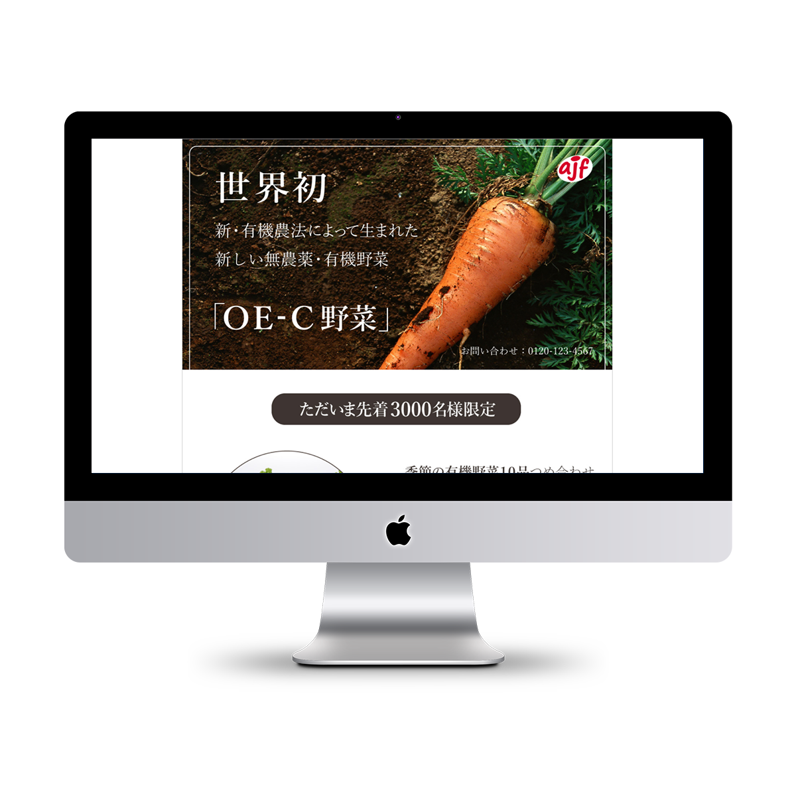
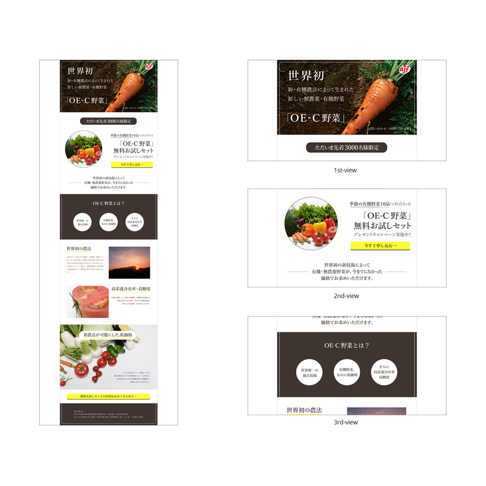

Toru Otani

Illustrator課題「ランディングページデザイン」(訓練校課題)
- ・担当範囲
- 企画 / ディレクション / ページデザイン / テキスト作成
- ・制作時間
- 企画 8/h デザイン制作 8/h 制作時期：2017/8/1～2017/8/2
http://adjustacademy.com/d1705/d170504/ai/oe-c/index.html
―
コンセプト
有機・無農薬野菜の宅配サービス「OE-C野菜」を展開する「株式会社ajf」という会社を架空に設定し、こちらも架空のキャンペーンである「OE-C野菜無料お試しセット」のランディングページを制作した。本ランディングページの成果としては、ページ内に設置した「お申し込みボタン」からの、キャンペーン申し込みを想定している。
デザインのコンセプトとしては、製品の特性である「有機・無農薬」というイメージを崩さぬよう配色や書体に気を配り、清潔感や安心感、自然のみずみずしさといったイメージを喚起するようなデザインを意図した。
また最も注力したのは、ランディングページに着地した人をいかに滞在（スクロール）させ、飽きさせないかという点を考えた。画像やコピーが出てくるリズム、大きさのバランスなどが単調にならないよう注意し、各セクションごとに異なる構成をとりつつ全体の統一感を失わないようデザインを考えた。